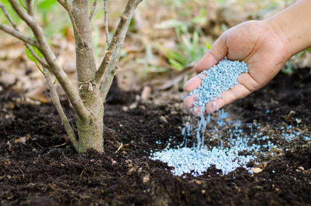
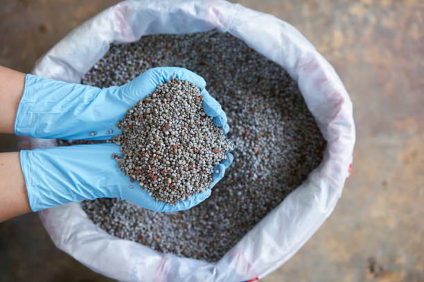
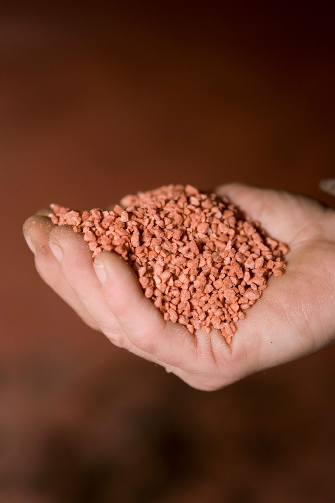

A fertilizer is any material of natural or synthetic origin that is applied to soil or to plant tissues to supply plant nutrients.
Understanding standard and organic fertilization materials.

Nitrogen fertilizers are made from ammonia (NH3) produced by the Haber-Bosch process. This ammonia is used as a feedstock for all other nitrogen fertilizers, such as anhydrous ammonium nitrate and urea.

Phosphate fertilizers are obtained by extraction from phosphate rock. These minerals are converted into water-soluble phosphate salts by treatment with sulfuric or phosphoric acids.

Potash is a mixture of potassium minerals used to make potassium fertilizers. Potash is soluble in water, so the main effort in producing this nutrient involves purification to remove sodium chloride.

Organic fertilizers typically contain organic materials as well as acceptable additives such as nutritive rock powders, ground sea shells, seed meal or kelp, and cultivated microorganisms.